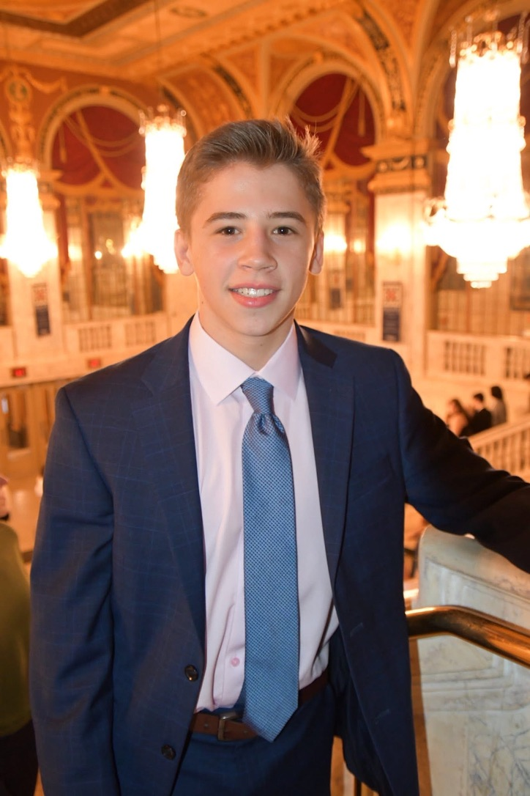

I focus on the rigorous, technical, and logistical demands of live theater. Specializing in theatrical lighting design, precise lighting programming, and highly proficient in using ETC Eos, I excel at turning creative concepts into flawless visual realities. My expertise spans both the creative lighting design process and the essential organizational workflows of stage management—from generating detailed production reports to managing complex backstage logistics and technical readiness.
Whether configuring complex rigs or running high-stakes live cues, I build my reputation on absolute reliability, technical precision, and a relentless focus on delivery.
On the logistical side, I specialize in the report-heavy administrative work that keeps a production timeline running smoothly. My methodology centers on generating highly structured production reports, managing backstage data tracking, and ensuring seamless communication between technical departments from initial load-in through final strike.
I am available for professional opportunities, internships, and project collaborations across lighting design, programming, stage management, and technical crew operations.
Let's discuss how I can bring reliable technical execution and sharp design to your next production. Reach out via any of the channels below: